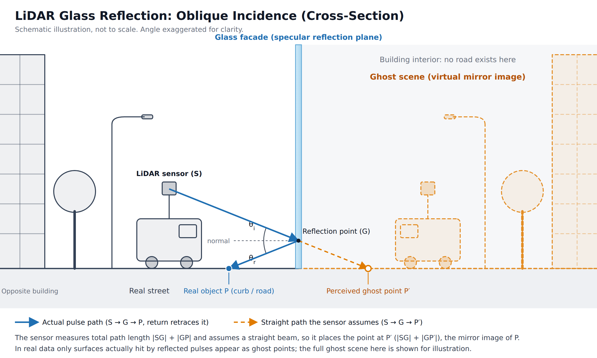

LIDAR / POINT-CLOUD ARTIFACTS
Ghost Streets: A LiDAR Mirror Illusions
A couple month ago during a routine day of mine I was reviewing a vehicle-mounted LiDAR point cloud, I noticed there is something wierdly odd. In point cloud inside a glass-fronted office building in central street of Tokyo what looked like a second street, complete with road surface and surrounding geometry. But in relaty the street-level imagery showed no road or parking area inside that building. Also lets keep in mind that it was my first time seeing someting like this in LiDAR point cloud. I was working on HD map production and point-cloud extraction for autonomous driving, so artifacts like this matter to me. After checking the imagery and examining the cloud from several angles, I realized the "inner street" was a mirror image of the real street in front of the building. Can LiDAR reflect its own light beams like this and creat reflection on the other side?
What is actually happening physically
A LiDAR sensor measures distance from the travel time of a laser pulse and assumes the pulse traveled in a straight line. A large glass facade can break that assumption. When a pulse hits the glass at an oblique angle, part of it reflects specularly, like light off a mirror, instead of passing through or scattering. The reflected pulse hits an object in front of the building (the road, a vehicle, pole, tree or a curb) and returns to the sensor along the same path. The sensor only knows the total travel time. It places the point along the original beam direction, at the full distance the pulse traveled, so the point ends up *behind* the glass. The result is a virtual copy of the street, mirrored across the plane of the facade. This effect is commonly called multipath reflection, or ghosting. Street canyons are especially prone to it. Flat, highly reflective glass surfaces and many oblique beam angles all raise the chances of mirrored returns.

Why it matters in automotive
It may look like a small, harmless artifact, but ghost geometry can pass unnoticed into downstream processing. If it's not removed, it can contaminate feature extraction and end up in HD map layers as nonexistent roads, lane markings, or obstacles. Autonomous driving systems rely on these maps being accurate, so catching this kind of error is part of quality control. Otherwise an error like this would be a meme material in internet for neo-luddite people. (a.k.a Safe Street Rebel group).